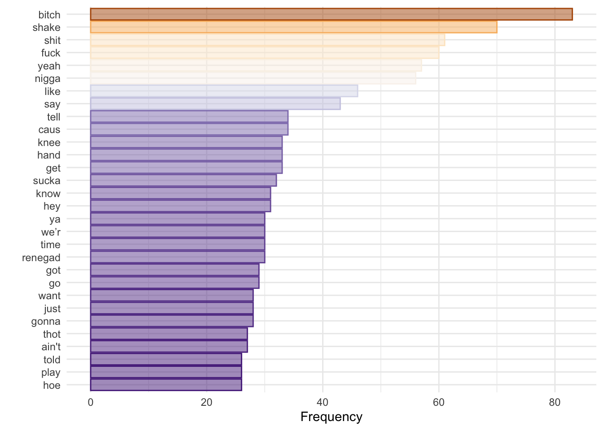
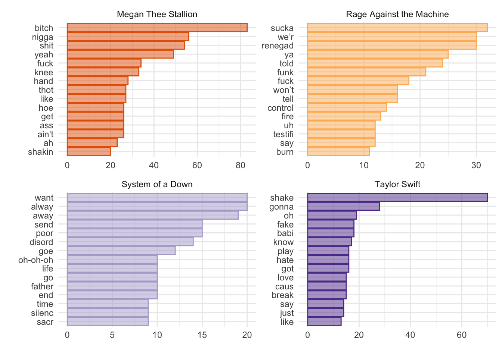
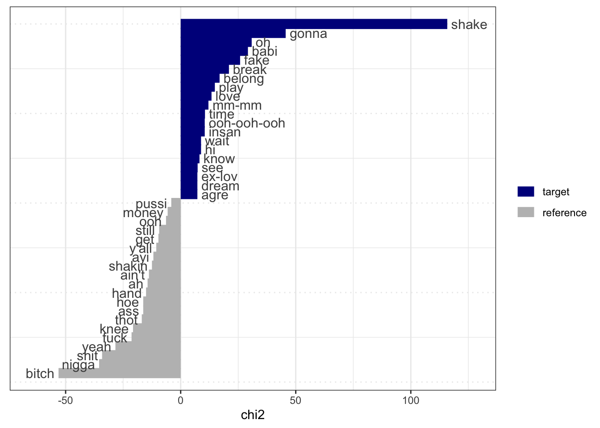
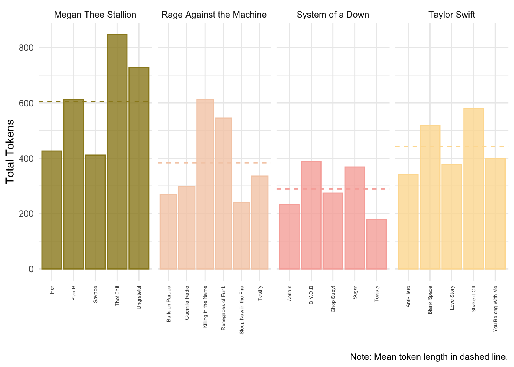

Chapter 2 Week 2: Tokenization and Word Frequency
Slides
- 3 Tokenization and Word Frequency (link or in Perusall)
2.1 Setup
As always, we first load the packages that we’ll be using:
library(tidyverse) # for wrangling data
library(tidylog) # to know what we are wrangling
library(tidytext) # for 'tidy' manipulation of text data
library(quanteda) # tokenization power house
library(quanteda.textstats)
library(quanteda.textplots)
library(wesanderson) # to prettify
library(readxl) # to read excel
library(kableExtra) # for displaying data in html format (relevant for formatting this worksheet mainly)2.2 Get Data:
For this example, we will be using small corpus of song lyrics.
## # A tibble: 6 × 5
## artist album year song lyrics
## <chr> <chr> <dbl> <chr> <chr>
## 1 Rage Against the Machine Evil Empire 1996 Bulls on Para… "Come…
## 2 Rage Against the Machine Rage Against the Machine 1992 Killing in th… "Kill…
## 3 Rage Against the Machine Renegades 2000 Renegades of … "No m…
## 4 Rage Against the Machine The Battle of Los Angeles 1999 Sleep Now in … "Yeah…
## 5 Rage Against the Machine The Battle of Los Angeles 1999 Guerrilla Rad… "Tran…
## 6 Rage Against the Machine The Battle of Los Angeles 1999 Testify "Uh!\…Ok, so we have different artists, from different genres and year…
##
## Megan Thee Stallion Rage Against the Machine System of a Down
## 5 6 5
## Taylor Swift
## 5And we have the lyrics in the following form:
## [1] "Yeah\r\n\r\nThe world is my expense\r\nIt’s the cost of my desire\r\nJesus blessed me with its future\r\nAnd I protect it with fire\r\n\r\nSo raise your fists and march around\r\nJust don’t take what you need\r\nI’ll jail and bury those committed\r\nAnd smother the rest in greed\r\n\r\nCrawl with me into tomorrow\r\nOr I’ll drag you to your grave\r\nI’m deep inside your children\r\nThey’ll betray you in my name\r\n\r\nHey, hey, sleep now in the fire\r\nHey, hey, sleep now in the fire\r\n\r\nThe lie is my expense\r\nThe scope of my desire\r\nThe party blessed me with its future\r\nAnd I protect it with fire\r\n\r\nI am the Niña, the Pinta, the Santa María\r\nThe noose and the rapist, the fields overseer\r\nThe Agents of Orange, the Priests of Hiroshima\r\nThe cost of my desire, sleep now in the fire\r\n\r\nHey, hey, sleep now in the fire\r\nHey, hey, sleep now in the fire\r\n\r\nFor it’s the end of history\r\nIt’s caged and frozen still\r\nThere is no other pill to take\r\nSo swallow the one that made you ill\r\n\r\nThe Niña, the Pinta, the Santa María\r\nThe noose and the rapist, the fields overseer\r\nThe Agents of Orange, the Priests of Hiroshima\r\nThe cost of my desire to sleep now in the fire\r\n\r\nYeah\r\n\r\nSleep now in the fire\r\nSleep now in the fire\r\nSleep now in the fire\r\nSleep now in the fire"2.3 Cleaning the Text
Much like music, text comes in different forms and qualities. From the Regex workshop, you might remember that there are special characters that can signal, for example, a new line (\n), or carriage return (\r). For this example, we can get rid of them 3. Before working with text, always check the state of your documents once loaded into your program of choice.
sample_lyrics <- sample_lyrics %>%
mutate(lyrics_clean = str_replace_all(lyrics,"\\n", "\\."),
lyrics_clean = str_replace_all(lyrics_clean,"\\r", "\\.")) %>%
select(-lyrics)## mutate: new variable 'lyrics_clean' (character) with 21 unique values and 0% NA## select: dropped one variable (lyrics)## [1] "Yeah....The world is my expense..It’s the cost of my desire..Jesus blessed me with its future..And I protect it with fire....So raise your fists and march around..Just don’t take what you need..I’ll jail and bury those committed..And smother the rest in greed....Crawl with me into tomorrow..Or I’ll drag you to your grave..I’m deep inside your children..They’ll betray you in my name....Hey, hey, sleep now in the fire..Hey, hey, sleep now in the fire....The lie is my expense..The scope of my desire..The party blessed me with its future..And I protect it with fire....I am the Niña, the Pinta, the Santa María..The noose and the rapist, the fields overseer..The Agents of Orange, the Priests of Hiroshima..The cost of my desire, sleep now in the fire....Hey, hey, sleep now in the fire..Hey, hey, sleep now in the fire....For it’s the end of history..It’s caged and frozen still..There is no other pill to take..So swallow the one that made you ill....The Niña, the Pinta, the Santa María..The noose and the rapist, the fields overseer..The Agents of Orange, the Priests of Hiroshima..The cost of my desire to sleep now in the fire....Yeah....Sleep now in the fire..Sleep now in the fire..Sleep now in the fire..Sleep now in the fire"2.4 Tokenization
Our goal is to create a document-feature matrix, from which we will later extract information about word frequency. To do that, we start by crating a corpus object, from the quanteda package.
corpus_lyrics <- corpus(sample_lyrics,
text_field = "lyrics_clean",
unique_docnames = TRUE)
summary(corpus_lyrics)## Corpus consisting of 21 documents, showing 21 documents:
##
## Text Types Tokens Sentences artist
## text1 119 375 35 Rage Against the Machine
## text2 52 853 83 Rage Against the Machine
## text3 188 835 91 Rage Against the Machine
## text4 97 352 38 Rage Against the Machine
## text5 160 440 50 Rage Against the Machine
## text6 133 535 67 Rage Against the Machine
## text7 104 559 53 System of a Down
## text8 67 365 40 System of a Down
## text9 68 298 33 System of a Down
## text10 65 258 32 System of a Down
## text11 137 558 68 System of a Down
## text12 131 876 70 Taylor Swift
## text13 159 465 41 Taylor Swift
## text14 162 544 62 Taylor Swift
## text15 196 738 84 Taylor Swift
## text16 169 549 50 Taylor Swift
## text17 229 867 55 Megan Thee Stallion
## text18 193 664 61 Megan Thee Stallion
## text19 310 1190 87 Megan Thee Stallion
## text20 198 656 48 Megan Thee Stallion
## text21 256 1050 73 Megan Thee Stallion
## album year song
## Evil Empire 1996 Bulls on Parade
## Rage Against the Machine 1992 Killing in the Name
## Renegades 2000 Renegades of Funk
## The Battle of Los Angeles 1999 Sleep Now in the Fire
## The Battle of Los Angeles 1999 Guerrilla Radio
## The Battle of Los Angeles 1999 Testify
## Mezmerize 2005 B.Y.O.B
## Toxicity 2001 Chop Suey!
## Toxicity 2001 Aerials
## Toxicity 2001 Toxicty
## Toxicity 2001 Sugar
## 1989 2014 Shake it Off
## Midnights 2022 Anti-Hero
## Fearless 2008 You Belong With Me
## 1989 2014 Blank Space
## Fearless 2008 Love Story
## Traumazine 2022 Plan B
## Suga 2020 Savage
## Something for Thee Hotties 2021 Thot Shit
## Traumazine 2022 Her
## Traumazine 2022 UngratefulLooks good. Now we can tokenize our corpus (and reduce complexity). One benefit of creating a corpus object first is that we maintain all the metadata for every document when we tokenize. This will come in handy in the future.
lyrics_toks <- tokens(corpus_lyrics,
remove_numbers = TRUE, # Thinks about this
remove_punct = TRUE, # Remove punctuation!
remove_url = TRUE) # Might be helpful
lyrics_toks[c(4,14)]## Tokens consisting of 2 documents and 4 docvars.
## text4 :
## [1] "Yeah" "The" "world" "is" "my" "expense" "It’s"
## [8] "the" "cost" "of" "my" "desire"
## [ ... and 227 more ]
##
## text14 :
## [1] "You're" "on" "the" "phone" "with"
## [6] "your" "girlfriend" "she's" "upset" "She's"
## [11] "going" "off"
## [ ... and 385 more ]We got rid of the punctuation. Now let’s remove stop words, high and low frequency words, and stem the remaining tokens. Here I am cheating, though. I know that high and low frequency words because I checked my dfm (see next code chunk).
lyrics_toks <- tokens_remove(lyrics_toks,
# you can change or add stopwords depending on the
# language(s) of the documents
c(stopwords(language = "en"),
# Now is high frequency... there are many low
# frequency tokens. We will check these later
"now"),
padding = F)
lyrics_toks_stem <- tokens_wordstem(lyrics_toks, language = "en")
lyrics_toks[c(4,14)]## Tokens consisting of 2 documents and 4 docvars.
## text4 :
## [1] "Yeah" "world" "expense" "It’s" "cost" "desire" "Jesus"
## [8] "blessed" "future" "protect" "fire" "raise"
## [ ... and 105 more ]
##
## text14 :
## [1] "phone" "girlfriend" "upset" "going" "something"
## [6] "said" "Cause" "get" "humor" "like"
## [11] "room" "typical"
## [ ... and 133 more ]## Tokens consisting of 2 documents and 4 docvars.
## text4 :
## [1] "Yeah" "world" "expens" "It’s" "cost" "desir" "Jesus"
## [8] "bless" "futur" "protect" "fire" "rais"
## [ ... and 105 more ]
##
## text14 :
## [1] "phone" "girlfriend" "upset" "go" "someth"
## [6] "said" "Caus" "get" "humor" "like"
## [11] "room" "typic"
## [ ... and 133 more ]We can compare the stemmed output and the non-stemmed output. Why did ‘future’ become ‘futur’? Because we are assuming that, for our purposes, ‘future=futuristic’. This is for the researcher to decide. And finally, we can create our document-feature matrix (dfm).
## Document-feature matrix of: 6 documents, 1,165 features (93.12% sparse) and 4 docvars.
## features
## docs come wit microphon explod shatter mold either drop hit like
## text1 4 4 1 1 1 1 1 3 1 1
## text2 2 0 0 0 0 0 0 0 0 0
## text3 0 0 0 0 0 0 0 0 0 4
## text4 0 0 0 0 0 0 0 0 0 0
## text5 0 0 0 0 0 0 0 0 0 1
## text6 0 4 0 0 0 0 0 0 0 0
## [ reached max_nfeat ... 1,155 more features ]Note that once we create the dfm object, all the tokens become lowercase. Now we can check what are the 15 most frequent tokens.
lyrics_dfm_stem %>%
textstat_frequency(n=30) %>%
ggplot(aes(x = reorder(feature,frequency),y=frequency,fill = (frequency), color = (frequency))) +
geom_col(alpha=0.5) +
coord_flip() +
scale_x_reordered() +
scale_color_distiller(palette = "PuOr") +
scale_fill_distiller(palette = "PuOr") +
theme_minimal() +
labs(x="",y="Frequency",color = "", fill = "") +
theme(legend.position="none") 
Does not tell us much, but I used the previous code to check for low-information tokens that I might want to remove from my analysis. We can also see how many tokens appear only once:
## filter: removed 566 rows (49%), 599 rows remaining## [1] 599More interesting for text analysis is to count words over time/space. In this case, our ‘space’ can be the artist.
lyrics_dfm_stem %>%
textstat_frequency(n=15, groups = c(artist)) %>%
ggplot(aes(x = reorder_within(feature,frequency,group),y=frequency,fill = group, color = group)) +
geom_col(alpha = 0.5) +
coord_flip() +
facet_wrap(~group, scales = "free") +
scale_x_reordered() +
scale_color_brewer(palette = "PuOr") +
scale_fill_brewer(palette = "PuOr") +
theme_minimal() +
labs(x="",y="",color = "", fill = "") +
theme(legend.position="none") 
Interesting. Not a lot of overlap (apart from a token from Megan Thee Stallion and Rage Against the Machine). However, it would be great if we could measure the importance of a word relative to how much it appears across documents (one way to denominate). Enter TF-IDF: “Term-Frequency / Inverse-Document-frequency”. TF-IDF weighting up-weights relatively rare words that do not appear in all documents. Using term frequency and inverse document frequency allows us to find words that are characteristic for one document within a collection of documents.
lyrics_dfm_tfidf <- dfm_tfidf(lyrics_dfm_stem)
lyrics_dfm_tfidf %>%
textstat_frequency(n=15, groups = c(artist), force=T) %>%
ggplot(aes(x = reorder_within(feature,frequency,group),y=frequency,fill = group, color = group)) +
geom_col(alpha = 0.5) +
coord_flip() +
facet_wrap(~group, scales = "free") +
scale_x_reordered() +
scale_color_brewer(palette = "PuOr") +
scale_fill_brewer(palette = "PuOr") +
theme_minimal() +
labs(x="",y="TF-IDF",color = "", fill = "") +
theme(legend.position="none") 
If we are building a dictionary, for example, we might want to include words with high TF-IDF values. Another way to think about TF-IDF is in terms of predictive power. Words that are common to all documents do not have any predictive power and receive a TD-IDF value of 0. Words that appear, but only in relatively few document, have greater predictive power and receive a TD-IDF > 0. Very rare words are also penalized, since these might provide only specific information about one document (i.e., high prediction for one document but no information about the rest). As you will read in Chapter 6/7 in Grimmer et al., the idea is to find the right balance.
Another useful tool (and concept) is keyness. Keyness is a two-by-two association score for features that occur differentially across different categories. We can estimate which features are associated more with one category (in this case, one artist), compared to the other. Let’s compare Megan Thee Stallion and Taylor Swift.
lyrics_dfm_ts_mts <- dfm_subset(lyrics_dfm_stem, year > 2006)
lyrics_key <- textstat_keyness(lyrics_dfm_ts_mts,
target = lyrics_dfm_ts_mts$artist == "Taylor Swift")
textplot_keyness(lyrics_key)
Similar to what we would have implied from the TF-IDF graphs. Notice that stemming does not always works are expected. Taylor Swift sings about “shake, shake, shake” and Megan Thee Stallion sings about “shaking”. However, both words appear as distinct features from both artists.
2.5 Word Frequency Across Artist
We can do something similar to what we did last week to look at word frequencies. Rather than creating a dfm, we can use the dataset as is, and get some information. For example, the average number of tokens by artist.
sample_lyrics %>%
# take the column lyrics_clean and divide it by words
# this uses a similar tokenizer to quanteda
unnest_tokens(word, lyrics_clean) %>%
group_by(song) %>%
mutate(total_tk_song = n()) %>%
distinct(song,.keep_all=T) %>%
group_by(artist) %>%
mutate(mean_tokens = mean(total_tk_song)) %>%
ggplot(aes(x=song,y=total_tk_song,fill=artist,color=artist)) +
geom_col(alpha=.8) +
geom_hline(aes(yintercept = mean_tokens, color = artist), linetype = "dashed")+
scale_color_manual(values = wes_palette("Royal2")) +
scale_fill_manual(values = wes_palette("Royal2")) +
facet_wrap(~artist, scales = "free_x", nrow = 1) +
theme_minimal() +
theme(legend.position="none",
axis.text.x = element_text(angle = 90, size = 5,vjust = 0.5, hjust=1)) +
labs(x="", y = "Total Tokens", color = "", fill = "",
caption = "Note: Mean token length in dashed line.")## group_by: one grouping variable (song)## mutate (grouped): new variable 'total_tk_song' (integer) with 20 unique values and 0% NA## distinct (grouped): removed 8,958 rows (>99%), 21 rows remaining## group_by: one grouping variable (artist)## mutate (grouped): new variable 'mean_tokens' (double) with 4 unique values and 0% NA
Alternatively, we can estimate the frequency of a specific token by song.
lyrics_totals <- sample_lyrics %>%
# take the column lyrics_clean and divide it by words
# this uses a similar tokenizer to quanteda
unnest_tokens(word, lyrics_clean) %>%
group_by(song) %>%
mutate(total_tk_song = n()) %>%
distinct(song,.keep_all=T) ## group_by: one grouping variable (song)## mutate (grouped): new variable 'total_tk_song' (integer) with 20 unique values and 0% NA## distinct (grouped): removed 8,958 rows (>99%), 21 rows remaining# let's look for "like"
lyrics_like <- sample_lyrics %>%
# take the column lyrics_clean and divide it by words
# this uses a similar tokenizer to quanteda
unnest_tokens(word, lyrics_clean) %>%
filter(word=="like") %>%
group_by(song) %>%
mutate(total_like_song = n()) %>%
distinct(song,total_like_song) ## filter: removed 8,934 rows (99%), 45 rows remaining## group_by: one grouping variable (song)## mutate (grouped): new variable 'total_like_song' (integer) with 7 unique values and 0% NA## distinct (grouped): removed 33 rows (73%), 12 rows remainingWe can now join these two data frames together with the left_join() function and join by the “song” column. We can then pipe the joined data into a plot.
lyrics_totals %>%
left_join(lyrics_like, by = "song") %>%
ungroup() %>%
mutate(like_prop = total_like_song/total_tk_song) %>%
ggplot(aes(x=song,y=like_prop,fill=artist,color=artist)) +
geom_col(alpha=.8) +
scale_color_manual(values = wes_palette("Royal2")) +
scale_fill_manual(values = wes_palette("Royal2")) +
facet_wrap(~artist, scales = "free_x", nrow = 1) +
theme_minimal() +
theme(legend.position="none",
axis.text.x = element_text(angle = 90, size = 5,vjust = 0.5, hjust=1)) +
labs(x="", y = "Prop. of \'Like\'", color = "", fill = "")## left_join: added one column (total_like_song)## > rows only in x 9## > rows only in y ( 0)## > matched rows 12## > ====## > rows total 21## ungroup: no grouping variables## mutate: new variable 'like_prop' (double) with 13 unique values and 43% NA
2.6 Final Words
As will be often the case, we won’t be able to cover every single feature that the different packages have to offer, or how some objects that we create look like, or what else we can do with them. My advise is that you go home and explore the code in detail. Try applying the code to a different corpus and come next class with questions (or just show off what you were able to do).
This is not always the case. Sometimes, we can use this characters to change our unit of analysis. For example, is we want our unit of analysis to be the paragraph, rather than the whole text, then these markers can aid when separating the text.↩︎